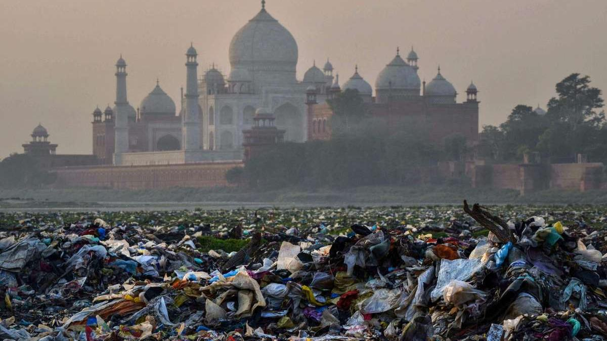
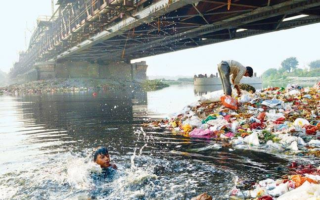
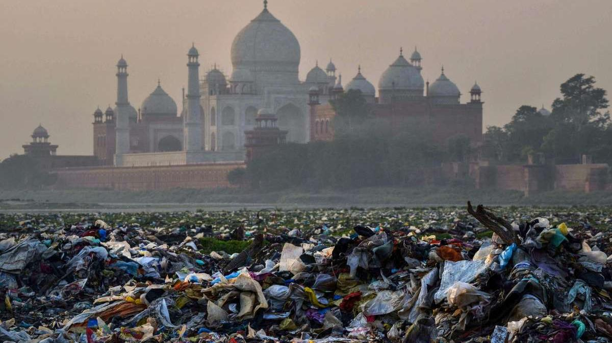
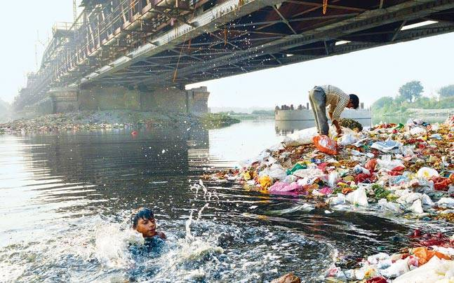

Yamuna River Pollution
About 57 million people depend on Yamuna waters as it accounts for more
than 70% of Delhi’s water supplies, but today it is also referred to as
‘Delhi’s dying holy river’. Yamuna is the second largest tributary of
River Ganga and the longest tributary of India, it originates from
Yamunotri glacier in Uttarakhand and flows across seven states and merges
with the river Ganga at Sangam in Prayagraj, Uttar Pradesh.
Who killed Yamuna Maa?
 



POLLUTION
Main sources of pollution
- Domestic Sources
- Industrial heavy metal contamination
- Untreated Sewage
- Idol Immersion leading to increased toxicity
- Plastic Pollution
CORONAVIRUS AND ITS EFFECTS ON YAMUNA
-
With industries shut due to the novel coronavirus disease (COVID-19)
lockdown, national capital city’s residents have been sharing
photographs of a ‘cleaner Yamuna’.
-
However, according to reports, industries make only 10 to 20% of
pollution load and the majority of the pollution load comes from
domestic sewage, which has not seen any decline as the household waste
has continued.
-
However, there is no real-time or comparative data to measure the impact
of lockdown on pollution in Yamuna so far.